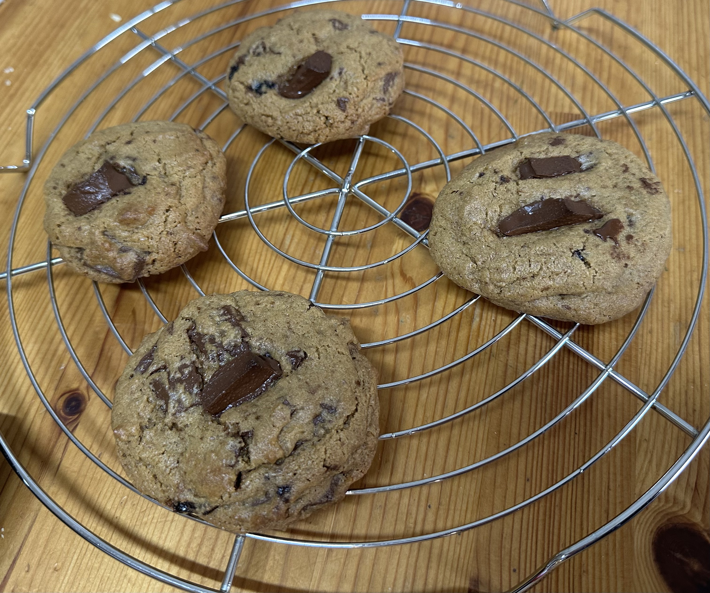

Cookie com pedaços de chocolate

Ingredientes
- 140 g de manteiga amolecida
- 110 g de açúcar
- 140 g de açúcar amarelo ou mascavo
- 1 ovo
- 1 colher (chá) de baunilha (essência ou extracto)
- 250 g de farinha (tipo 55 sem fermento)
- 1/2 colher (chá) de bicarbonato de sódio
- 1 colher (chá) de fermento químico
- 1 pitada de sal
- 150 g de chocolate meio-amargo picado
Modo de preparo
- Juntar o ovo batido juntamente com a baunilha e mexer para incorporar na mistura.
- Adicionar os secos: farinha, fermento, bicarbonato e sal. Mexer até estarem incorporados e por fim misturar o chocolate em pedaços pequenos.
- Fazer bolas com a massa (de preferência com uma colher de gelados) e colocar num tabuleiro forrado com papel vegetal bem espaçadas.
- Cozer em forno pré-aquecido a 180°C até que as bordas fiquem douradas, cerca de 10 minutos (o tempo de cozedura depende do tamanho dos cookies).
Observação:
A massa pode ser congelada já moldada em bolinhas. Assar em forno pré-aquecido a 180°C até que as bordas fiquem douradas, cerca de 15 a 20 minutos.